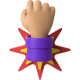
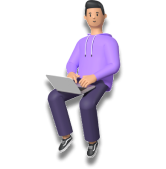

Problem Solver
Fast Worker Enthusiast
Good Teamwork
MY FIRST UI/UX PROJECT
Investment Exchange
"Help the user to planing their financial future with investment"
See Project
PM & UI/UX TEAM PROJECT
Mental Health App
"Help the user to increase their mental health awareness"
See ProjectGet to Know Me

I'm Ibnu, a UI/UX Designer based in Depok, West Java. with a 4-months bootcamp experience, I have developed a solid foundation in designing interfaces that are both visually appealing and user-friendly. My skills include creating wireframes, prototypes, and visual designs that effectively communicate the intended message and meet the user's needs.
During my bootcamp, I worked on 2 design projects, Individual and collaborated with product management, where I was able to apply design thinking, agile methodologies, research plan and user-centered design principles to create interfaces that are intuitive and easy to use. I am proficient in design software such as, Sketch, Figma, which allows me to create high-fidelity designs and prototypes and Trello for Management, Scrum, Design Sprint
My experience in the bootcamp has taught me the importance of collaboration and communication in the design process. I am comfortable working in a team environment, and I believe that effective communication and feedback are key to creating successful designs.
Overall, I am a highly motivated and creative UI/UX Designer who is committed to creating interfaces that enhance the user's experience.
My Approach
My design approach is focused on understanding users' needs and creating interfaces that cater to those needs. I take into account the latest design trends, user behavior, to create designs that are both functional and aesthetic.
Other than Designer
I'm usually playing games with my parties. but if not, you may found me at coffee, or concert.